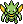

追打Pursuit
- 屬性
- 惡
- 分類
- 特殊
- 威力
- 40
- 命中
- 100%
- SP
- 10
- 冷卻
- 1 秒（特殊組）
- 範圍
- 近戰
- 距離
- 1 格
- 段數
- 1
- 前搖
- 0.25 秒
- 接觸
- 是
招式分類跟隨招式的 屬性 （第三世代規則，與火紅／葉綠相同）：火、水、草、電、超能力、冰、龍、惡屬性招式一律是特殊招式；其他屬性是物理招式（例外：分擔痛楚）。因此暗影球是物理招式，攀瀑是特殊招式。這是刻意設計，不是錯誤。
即時戰鬥效果
對正在逃走的野生寶可夢，或剛換上場的 PVP 對手，威力 1.5x（2 秒內）。
命中使用者正前方的一個目標。
升級時學會
 大針蜂 Lv 30
大針蜂 Lv 30 小拉達 Lv 27
小拉達 Lv 27 拉達 Lv 30
拉達 Lv 30 烈雀 Lv 19
烈雀 Lv 19 大嘴雀 Lv 26
大嘴雀 Lv 26 嘟嘟 Lv 9
嘟嘟 Lv 9 嘟嘟利 Lv 1嘟嘟利 Lv 9
嘟嘟利 Lv 1嘟嘟利 Lv 9 快拳郎 Lv 13
快拳郎 Lv 13
飛天螳螂 Lv 11 肯泰羅 Lv 19
肯泰羅 Lv 19 月亮伊布 Lv 16
月亮伊布 Lv 16 黑暗鴉 Lv 14
黑暗鴉 Lv 14 土龍弟弟 Lv 31
土龍弟弟 Lv 31 巨鉗螳螂 Lv 11
巨鉗螳螂 Lv 11 戰舞郎 Lv 13
戰舞郎 Lv 13 木守宮 Lv 16
木守宮 Lv 16 森林蜥蜴 Lv 17
森林蜥蜴 Lv 17 蜥蜴王 Lv 17
蜥蜴王 Lv 17 長翅鷗 Lv 43
長翅鷗 Lv 43 貓鼬斬 Lv 25
貓鼬斬 Lv 25 夜巡靈 Lv 27
夜巡靈 Lv 27 彷徨夜靈 Lv 27
彷徨夜靈 Lv 27 金屬怪 Lv 32
金屬怪 Lv 32 巨金怪 Lv 32
巨金怪 Lv 32 頭蓋龍 Lv 10
頭蓋龍 Lv 10 戰槌龍 Lv 10
戰槌龍 Lv 10 蜂女王 Lv 15
蜂女王 Lv 15 泳圈鼬 Lv 10
泳圈鼬 Lv 10 浮潛鼬 Lv 10
浮潛鼬 Lv 10 烏鴉頭頭 Lv 1
烏鴉頭頭 Lv 1 花岩怪 Lv 1
花岩怪 Lv 1 不良蛙 Lv 15毒骷蛙 Lv 15
不良蛙 Lv 15毒骷蛙 Lv 15 遠古巨蜓 Lv 30
遠古巨蜓 Lv 30 黑夜魔靈 Lv 25
黑夜魔靈 Lv 25招式光碟
 惡屬性招式光碟 ・少見（每打倒一隻該屬性寶可夢 1%，由 19 個招式分配）
惡屬性招式光碟 ・少見（每打倒一隻該屬性寶可夢 1%，由 19 個招式分配）
可以教會 53 隻寶可夢：
 狃拉
狃拉 戴魯比
戴魯比 黑魯加
黑魯加 班基拉斯
班基拉斯 土狼犬
土狼犬 大狼犬
大狼犬 長鼻葉
長鼻葉 狡猾天狗
狡猾天狗 勾魂眼
勾魂眼 利牙魚
利牙魚 巨牙鯊
巨牙鯊 夢歌仙人掌
夢歌仙人掌 鐵螯龍蝦
鐵螯龍蝦 阿勃梭魯
阿勃梭魯 臭鼬噗
臭鼬噗 龍王蠍
龍王蠍 瑪狃拉
瑪狃拉